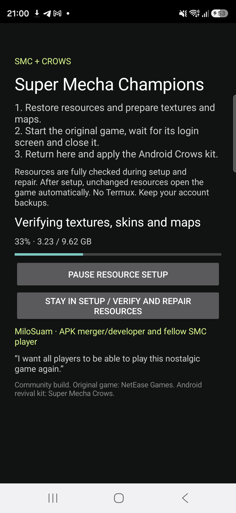
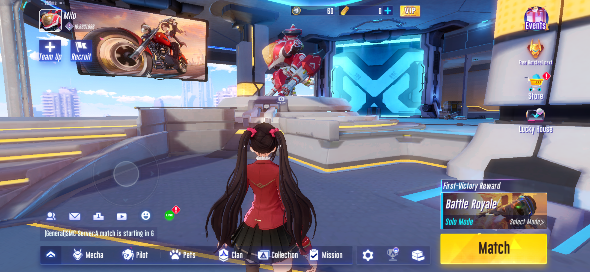
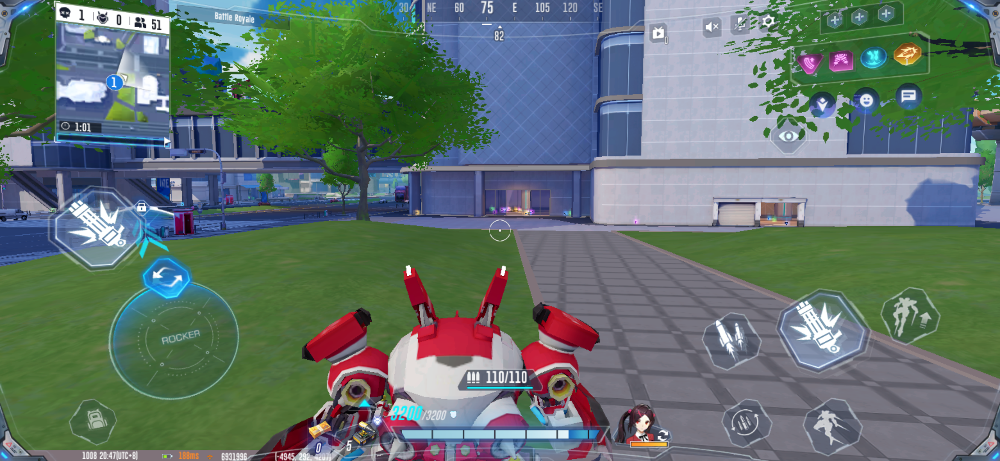

COMMUNITY REVIVAL / ANDROID
A game worth
remembering.
Super Mecha Champions × Crows
Install SMC Crows Android. Setup downloads and verifies the matching Android resources, then guides you through the first start and Crows connection patch.
Android release · 8 October 2026
APK: 2.54 GB · Resources: 5.56 GB · Wi-Fi recommended
IMPORTANT ANNOUNCEMENT
Game frozen? Close and reopen.
If the game freezes, close it completely and open SMC again. You can return to the same match if it is still in progress and your character has not been eliminated.
Matching resources. Verified installation.
The rebuild preserves the reference game payloads, uses all 22 audited Android NPK packs and restores 29 recovered Android files. Signatures, archive integrity, resource hashes and setup/downloader host tests passed.
Samsung S26 Ultra / Android 16: the player reports no further freeze and tested 30, 45, 60, 90 and 120 FPS. The final r4 APK passed setup, login, textured lobby and automatic reopen checks. The FPS report comes from the preceding setup candidate after in-game graphics changes; r4 preserves its native game files. Full-match stability and every pilot, skin and battle-pass screen have not been independently checked.
Install, restore, connect.
- Install the APK and open setup. Use Wi-Fi to download the three matching packs automatically, or import the matching ZIPs using its file picker.
- Keep setup open while it verifies and extracts the resources. Pause and retry are supported. The app checks available space; allow room for the APK, 5.56 GB of source resources, 9.62 GB decoded resources and temporary files.
- Use setup to run the original game once, wait for login and close it. Return and confirm that first-start attempt. If its old verification server is unavailable, follow the explicit continuation option shown in setup.
- Apply Crows from setup, complete its account step and use Play after integrity verification. On later launches, setup checks the saved resource state and opens the game automatically; an update or manual repair performs a full check. Keep account backups. No Termux or manual Android folder copying is required.
Resources are restored inside Android/data/com.netease.g93na/files/netease/smc/. Existing account files are preserved. Updating a previous community install requires the same signing certificate; the original NetEase-signed APK uses a different certificate.
Requests through the APK button, including repeat attempts. This does not count completed transfers, installations or unique players. The previous release count is preserved separately.
Loading APK count…
FOR THE PLAYERS
MiloSuam.
APK merger/developer · Fellow SMC player
“I want all players to be able to play this nostalgic game again.”
Original game by NetEase Games. Community Android kit by Super Mecha Crows. MiloSuam is credited for this APK merge.
Setup, login and gameplay.
The first three captures show the exact final r4 APK. The gameplay capture shows the preceding r3 setup candidate during the player’s successful session. Build identities and picture hashes are linked below.

r4 full update resource verification.
r4 login screen after full update verification.

r4 textured lobby after automatic reopen.

r3 main-map Firefox gameplay; user reported no freeze and tested 30/45/60/90/120 FPS; not a measured frame-pacing benchmark.
Matching resources and release files.
The APK downloads these packs automatically. These links also support offline import. Download all three matching parts; do not mix release versions.
APK SHA-256:
1d42be2fc7992a3fb4c93254890ef9f392fe69776811cf20eeefa9a589db80d3APK size: 2,539,852,614 bytes.